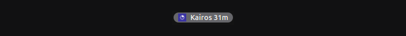
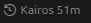

Your time vibe-coding,
on your screen
Kairos focus time in the GNOME top bar and VS Code status bar.
GNOME top bar

VS Code status bar

From the actual extensions · Screenshots taken at different times
Put Kairos where you work.
Pick a companion. Install Kairos first if you haven't already.
Get Kairos
Install Kairos and keep it running on this computer.
Add the tab
On GNOME Shell 45 or 46, paste the command into your terminal. No Node.js or repository checkout.
Find it in the top bar
Click Kairos to see your time and pause or resume tracking.
curl -fsSL https://kairos-tab-time.christianwell.xyz/install.sh | shDownloaded the ZIP? Run gnome-extensions install --force kairos-tab-time@local.shell-extension.zip, then gnome-extensions enable kairos-tab-time@local. Installation help ↗
Get Kairos
Install Kairos on the same computer as VS Code.
Add the companion
Paste the command into your terminal. You'll need the code command, but not Node.js.
Reload VS Code
See today's focus time in the bottom-right status bar. Click it to open your dashboard.
curl -fsSL https://kairos-tab-time.christianwell.xyz/install-vscode.sh | shDownloaded the VSIX? In VS Code, open Extensions → ⋯ → Install from VSIX. Installation help ↗